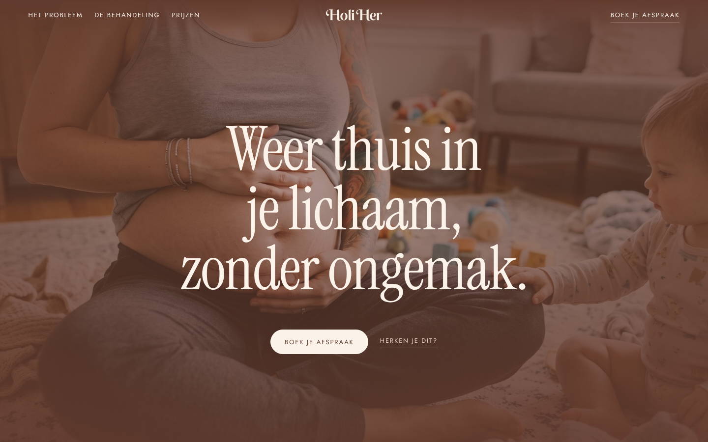
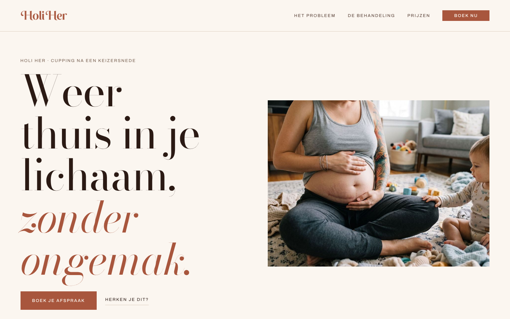
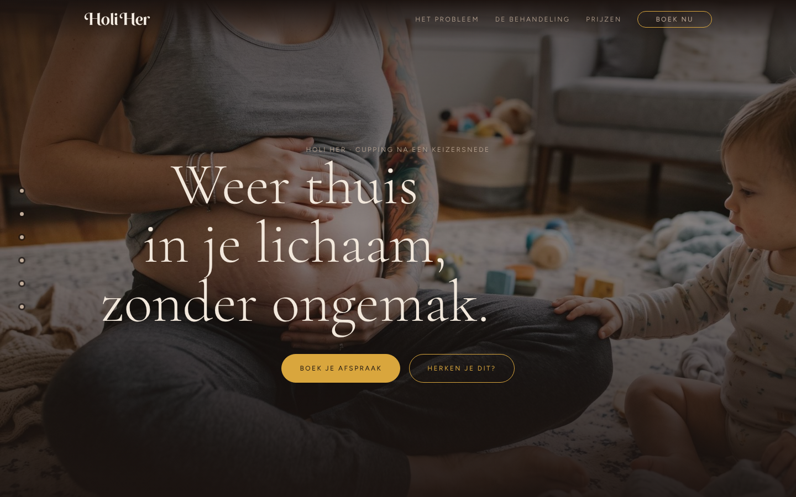
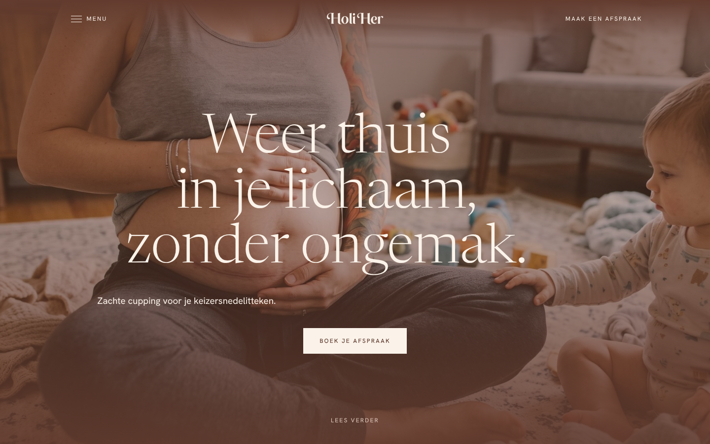

Vier versies voor Holi Her
Zelfde merk, zelfde teksten, één behandeling. Alle vier zijn één landingspagina met dezelfde onderdelen in dezelfde volgorde: kop, ondertitel, het probleem, de behandeling, hoe het gaat, over mij, ervaringen, prijzen, praktisch, vragen en afspraak. Alleen het gezicht verschilt. Waar nog iets ontbreekt (naam, prijzen, adres) staat een stippellijn.
-

A. Eén warme kamer
Alles op één kleigrond uit je logo, crèmekleurige letters, de foto over het hele eerste scherm. De vijf klachten staan als een lijst links, het verhaal zoomt rechts in.
In de geest van ever.co.id
-

B. Licht
Redactioneel, als een tijdschrift: tekst links, foto rechts. De vijf cijfers staan als een rij over de volle breedte; het gekozen cijfer krijgt een terracotta streep.
Bodoni op botkleurig papier, terracotta accent
-

C. Stil
Donker en filmisch, met de foto over het hele eerste scherm. De vijf cijfers staan als kaartjes naast elkaar, met een gouden draad langs de rand die meeloopt.
Cormorant op espresso, goud als enige signaal
-

D. Zoals ever.co.id
De opbouw van ever.co.id nagebouwd met jouw merk: één warme grond, een kop over de hele foto, en de vijf klachten als punten óp het litteken, met een kaart die wisselt.
Newsreader en Hanken Grotesk als vrije vervangers van hun Bradford en Maax